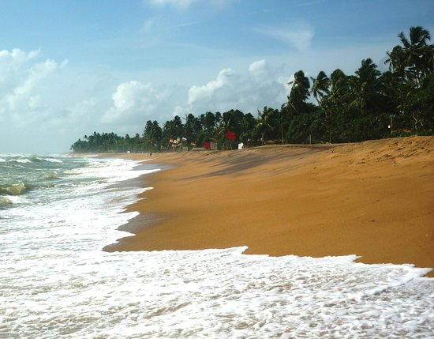

Kalutara Bodhiya is an old Bodhi tree which is identified as one of the 32 saplings of Jaya Sri Maha Bodhi which was planted during the reign of king Devanampiyatissa in the 2nd century BC at Anuradhapura, Sri Lanka.[4] According to ancient chronicle Sinhala Bodhiwamsa, 32 saplings of sacred figs, which were sprouted from Jaya Sri Maha Bodhi, were planted in various parts of the country as instructed by Arahant Mahinda Thera. Further the chronicle states that this Bodhi tree existed intact till the 15th century AD. However it is said that the Buddhist public started to consider this place as a sacred place after a Pandyan prince named Wickrema Pandya planted a Bodhi tree at the Pahala Maluwa of the Kaluthara Bodhi premises in 1042 AD.[1] Prince Wickrema Pandya served as a viceroy in Kalutara area during that period. After the Portuguese took over the control of Maritime Provinces of Sri Lanka in 16th century, the site of the Kalutara Bodhiya was converted into a fort probably due to strategic importance of its location. After the Portuguese, the Dutch and the English, who succeeded them as colonial rulers of Sri Lanka, also used Kalutara Bodhi premises for administrative and military purposes. During the 19th century when the British government started to construct railroads in Sri Lanka, it was decided to remove this Bodhi tree as it was obstructing the initial plans to build the Kalutara Railway bridge. But it was later decided to construct the bridge without harming the Bodhi tree, due to the protests made by the Buddhist public, who were led by Sandanayake Upasaka, a Buddhist layman in Kalutara area.
Just over 40km from Colombo, bustling Kalutara is the first beach resort we reach traveling south of Colombo. Kalutara has a huge stretch of fine sand with Wadduwa to the north which is home to the area's top resorts. The appearance of roadside stalls selling coir rugs, basketware & reed mats signals the entry into Kalutara. As if the tell-tale signs wouldn't do, Kalutara heralds its presence with nothing less than the immense white gleaming dagoba of the Gangatilaka Vihara, immediately south of the long double-span bridge across the Kalu Ganga (River Black). Kalutara itself divides into Mahawaskaduwa (Kalutata North) where the beach is more scenic, right down to Katukurunda (Kalutata South) It's one of the west coast's largest settlements, but the long stretch of beach north of town remains reasonably unspoilt, dotted with a string of top-end hotels which make a decent first or last stop on a tour of the island, in view of the town's proximity to the international airport. Kalutara was once an important spice-trading centre controlled at various times by the Portuguese, the Dutch & the British. When the Dutch deserted the bustling spice port at Kalutara, they left behind canals linking the spice plantations. British replaced the inland estates with Rubber plantations. Though estates now produce rubber, traces of the old spice route are seen. By paddling through the tranquil waters of the old canals en route the little known & intriguing Richmond Castle, a few kilometers inland. Today, the bustling town is better known for its coconut palm gardens & for coconut-fibre mats, ropes & baskets.
Kalu Ganga (Sinhalese: කළු ගඟ; literally: Black River) is a river in Sri Lanka. Measuring 129 km (80 mi) in length, the river originates from Sri Paadhaya and reach the sea at Kalutara. The Black River flows through the Ratnapura and the Kalutara District and pass the city Ratnapura. The mountainous forests in the Central Province and the Sinharaja Forest Reserve are the main sources of water for the river.